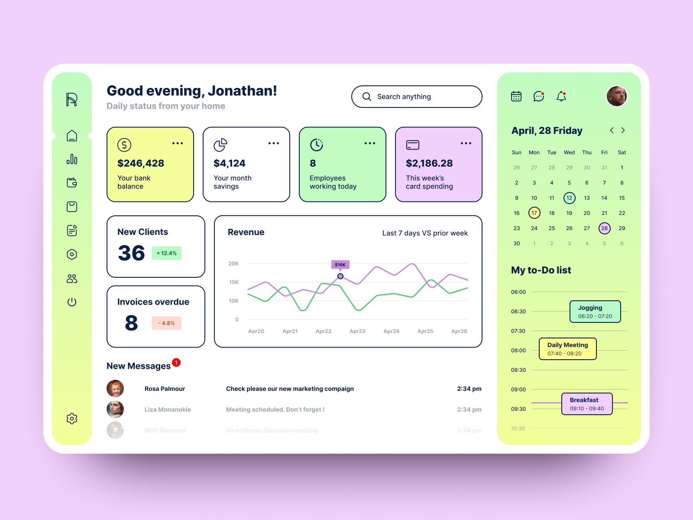
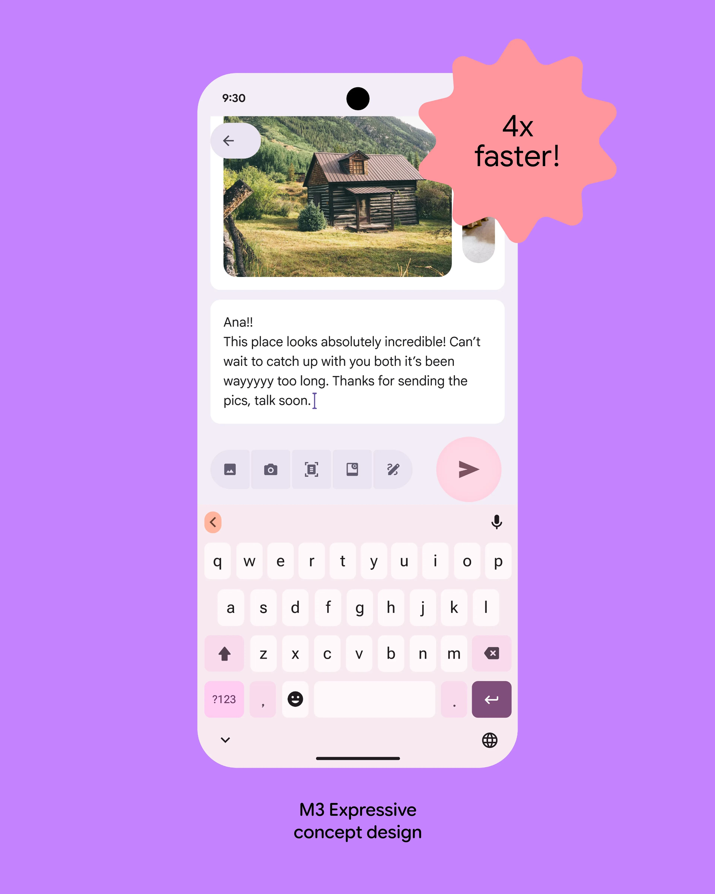
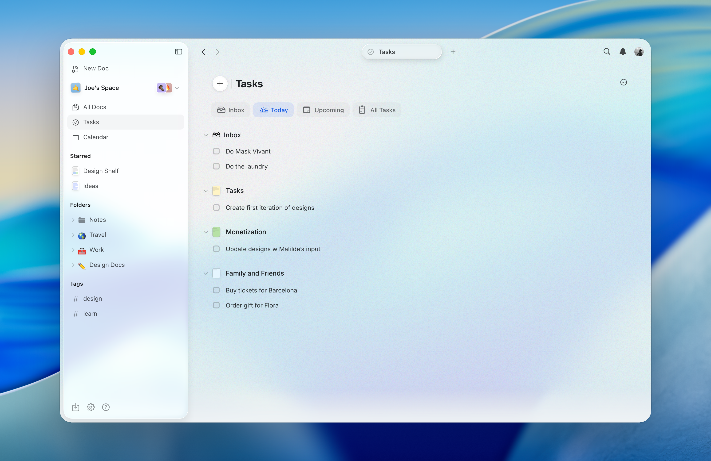
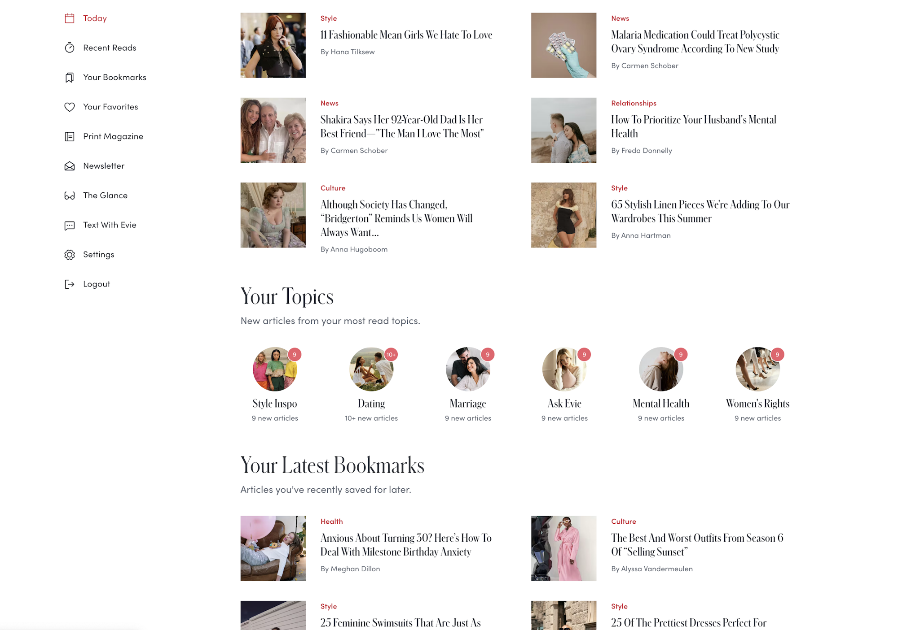
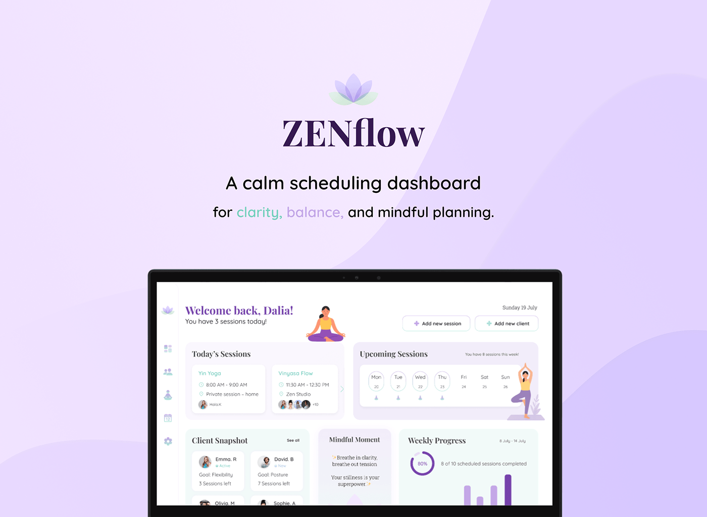
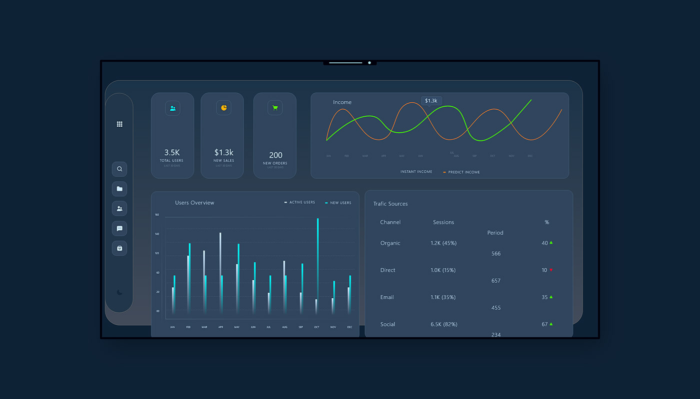
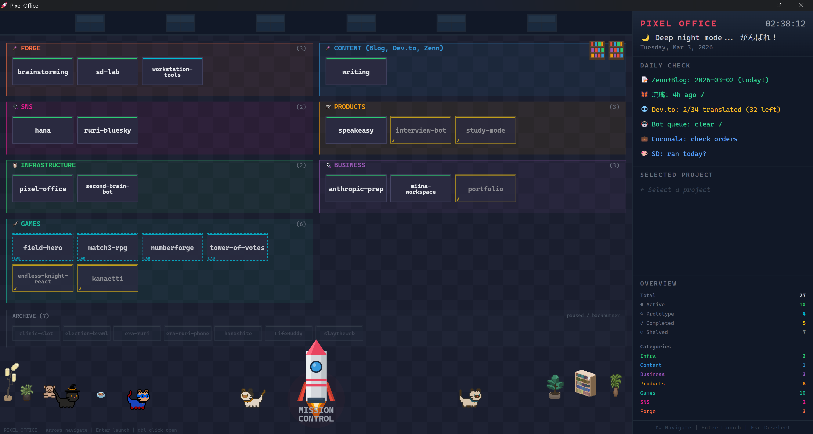
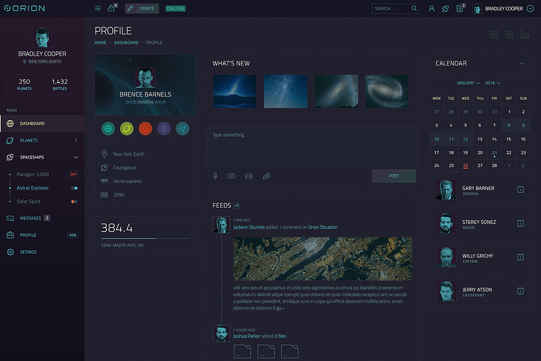
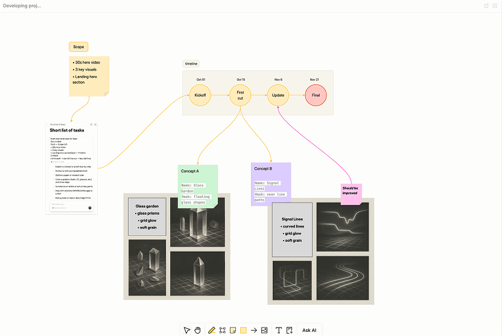

Une autre personnalité pour votre interface.
Explore les références, puis choisis les détails à reprendre dans le design.
Cliquer sur une image l’ouvre en grand dans un nouvel onglet.
Néo-brutaliste / graphique
Typographie franche, bordures visibles et aplats de couleur.
Bruddle dashboard
WhiteUI.Store · Source ↗
Navigation sombre, panneaux rectangulaires, typographie affirmée et quelques étiquettes colorées.

Agrandir ↗Dashboard in Neo-Brutalism style
Serj Mikey · Source ↗
Cartes détourées, aplats pastel et colonne secondaire visuellement distincte.
Exemple d’application
Un espace crème et encre, une file de tri très visible, des collections lilas et citron. Les onglets ressemblent à des intercalaires graphiques.
Point à maîtriser
Les bordures et les couleurs doivent laisser ressortir la ressource et son action principale.
Expressif / playful
Couleurs soutenues, grandes formes arrondies et rythme énergique.
Material 3 Expressive app studies
Google Design · Source ↗
Aplats colorés, contrastes de taille et groupes de commandes. Références mobiles à adapter au dashboard desktop.

Agrandir ↗Expressive email composition study
Google Design · Source ↗
Action principale mise en évidence. L’annotation de performance concerne l’étude Google ; elle ne prédit aucun résultat pour l’application.
Exemple d’application
Un accueil prune, lilas et corail ; des collections colorées ; des actions Garder / Archiver visibles. Des onglets arrondis, avec un état actif bien distinct.
Point à maîtriser
Les grands composants prennent de la place. La bibliothèque doit conserver une vue compacte.
Liquid Glass / profondeur
Cadre flottant, arrière-plan coloré et navigation translucide.
Craft workspace across devices
Craft Team · Source ↗
Organisation de documents en tableau, navigation flottante et cadre translucide.

Agrandir ↗Craft tasks workspace
Craft Team · Source ↗
Navigation par groupes et couches de surface ; conserver un fond stable pour le texte long.
Exemple d’application
Une fenêtre flottante sur fond bleu-violet, une bibliothèque visuelle et une surface de lecture opaque. Les onglets occupent une couche translucide dédiée.
Point à maîtriser
Le contraste doit rester stable sur le fond. Ces références natives demandent une adaptation au Web.
Éditorial / magazine
Titres à forte présence, images, rubriques et compositions variées.
Geist — identité et vues de lecture
Caitlin Aboud · Source ↗
Grandes surfaces de titre, palette vive et association photo / texte. Référence de composition éditoriale, pas de navigation d’application.

Agrandir ↗Evie Magazine — espace personnel
Delicious Simplicity · publié par DatoCMS · Source ↗
Titres serif, collections par sujet et favoris illustrés. Un exemple directement lié à la lecture et aux bookmarks.
Exemple d’application
Une revue personnelle : une ressource principale, des sélections par sujet et une bibliothèque illustrée. Onglets sobres, titres éditoriaux et accents orange ou bordeaux.
Point à maîtriser
Les miniatures doivent apporter du repérage. Prévoir une présentation soignée pour les ressources sans image.
Organique / illustré
Tons crème, argile ou pastel, illustrations et courbes souples.
Lumora — Wellness Dashboard
Publié par Maaz Siddiqui · Source ↗
Fond crème, accents argile, illustration intégrée et surfaces colorées. Reprendre le langage visuel, sans importer les widgets de santé.

Agrandir ↗ZenFlow — planning de sessions
Yara Alkadi · Source ↗
Blocs lavande et menthe, personnages illustrés, courbes. Exemple partiel : la composition d’origine est décrite comme minimaliste par sa créatrice.
Exemple d’application
Un bureau personnel chaleureux, des collections illustrées et des surfaces crème / terre cuite. Les onglets deviennent des intercalaires arrondis ; le contenu garde une grille régulière.
Point à maîtriser
Les illustrations restent ponctuelles. La seconde référence, plus calme, sert surtout pour les courbes et la palette.
Tactile / relief
Surfaces en relief, commandes enfoncées et lumière sur les bords.
Spend.io — personal finance
Jordan Hughes · Source ↗
Ombres douces, commandes creusées et objets en volume. Référence de matière uniquement ; les contrôles pâles ne constituent pas un modèle accessible.

Agrandir ↗Skeuomorphic UI / Interaction
Publié par Rehab Badwy · Source ↗
Panneaux bleutés, relief des boutons et éclairage des bords. L’effet reste secondaire par rapport à la lisibilité.
Exemple d’application
Une bibliothèque comme un plateau de fiches, avec des commandes qui semblent physiques. Les onglets ont un relief léger et une position active enfoncée.
Point à maîtriser
Ces anciens concepts ont des contrastes faibles. La profondeur peut inspirer xdex ; les textes et contours devront être renforcés.
Rétro / pixel
Cadres en pixels, étiquettes monospace et références aux interfaces anciennes.
8bitcn — composants et dashboard
orcdev / 8bitcn · Source ↗
Bordures à angles en pixels, accent ambre et commandes reconnaissables.

Agrandir ↗Pixel Office — command center
DavidAI311 · Source ↗
Zones colorées, étiquettes monospace et petits personnages pixel. Reprendre les repères de collections sans reproduire toute la scène.
Exemple d’application
Un atelier de collections façon bureau rétro : onglets rectangulaires, couleurs de dossiers et petits détails pixel. Les résumés utilisent une police de lecture normale.
Point à maîtriser
La police pixel est réservée aux titres courts. Les détails décoratifs ne doivent pas ralentir le tri.
Technique / cockpit
Surface sombre, traits fins, données compactes et accents lumineux.
ORION — vue dashboard
laaqiq · image publiée par Qubstudio · Source ↗
Panneaux instrumentés, fond sombre et accents cyan. Pour l’application, afficher des données utiles au tri, pas des jauges décoratives.

Agrandir ↗ORION — vue profil et flux
laaqiq · Source ↗
Grille dense, métadonnées compactes et rail de navigation. Les contrastes et tailles de texte seraient augmentés.
Exemple d’application
Un poste de veille : flux de sources, file de tri et coûts visibles. Onglets compacts et précis, accent cyan / ambre, métadonnées monospace et résumés lisibles.
Point à maîtriser
Ces références de science-fiction sont anciennes. Les petits textes et les effets lumineux demandent une adaptation importante.
Visuel / canvas
Cartes, images et notes regroupées sur une grande surface visuelle.
Kosmik — tableau de ressources
Kosmik · publié par TechCrunch · Source ↗
Images, liens et documents dans des groupes spatiaux. Référence historique, pas une recommandation de service actuel.

Agrandir ↗Integrity — canvas de projet
Integrity · Source ↗
Notes reliées, regroupements de cartes et barre d’outils locale. Pour l’application, les connexions représenteraient les liens entre ressources.
Exemple d’application
Un tableau de collections, avec des ressources regroupées par sujet et des liens croisés. Les onglets permettent de passer du tableau à la bibliothèque et aux vues de lecture.
Point à maîtriser
Le placement libre est une interaction supplémentaire. Une liste reste disponible pour chercher, trier et naviguer au clavier.